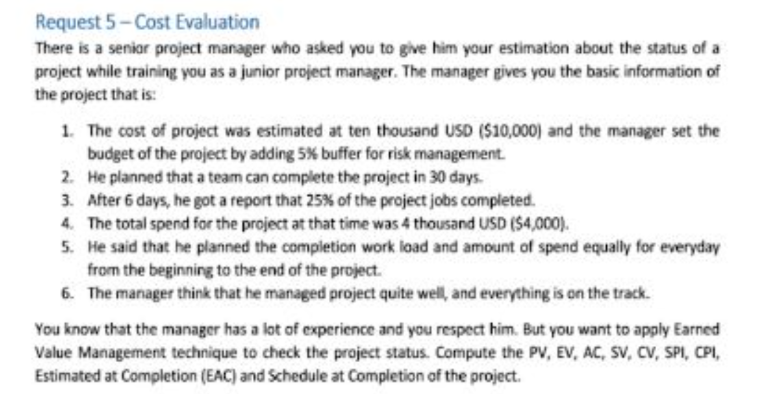

Critical path

- H
- F
- 9
- End
- H I
- 0
Task 3
List of Paths in the network
-
=> project duration is the longest path duration
- Path 1: Start -> A -> C -> E -> G -> I -> End with duration: 6 + 4 + 5 + 8 + 4 = 27 days
- Path 2: Start -> B -> D -> E -> G -> I -> End with duration: 3 + 7 + 5 + 8 + 4 = 27 days
- Path 3: Start -> B -> D -> F -> I -> End with duration: 3 + 7 + 6 + 4 =20 days
- Path 4: Start -> B -> D -> F -> H -> End with duration: 3 + 7 + 6 + 9 = 25 days
- Critical Paths are Path 1 and path 2. And project duration 27 days
Task 4
Shorten above project
If you want to shorten the project time by 5 days, you have to shorten the time in critical path , but now 3 days have passed, ( the end of task B and now you’re in task A ), so we have a way to shorten the time in task C , D, E, G, I . The appropriate choice is left with task G because a task with a duration of 8 days should be prioritized to shorten the time.
Not only that, we also have to reduce task H by 3 days due to the fact that when the critical path had been reduced to 22 days ( before is 27 days) , no other path can exceed this number.
Fast tracking method : Arrange task E so that it overlaps over tasks G on first days of task E. Besides, start the task H earlier than 3 days. This may increase risk, so that require more attention to communication.
-
Crashing method
- solution1
- Add people to join project to complete task G earlier than 5 days.
- Besides, add people to join project to complete task H earlier than 3 days.
- solution2
- Force team to work overtime on task G to complete it earlier than 5 days
- Force team to work overtime on task H to complete it earlier than 3 days
- solution3
- Reward team if they can complete task G earlier than 5 days
Crashing will increase cost.
Nhiệm vụ 3
Danh sách các đường đi trong mạng lưới
-
=> Thời gian dự án là thời gian của đường đi dài nhất
- Đường đi 1: Bắt đầu -> A -> C -> E -> G -> I -> Kết thúc với thời gian: 6 + 4 + 5 + 8 + 4 = 27 ngày
- Đường đi 2: Bắt đầu -> B -> D -> E -> G -> I -> Kết thúc với thời gian: 3 + 7 + 5 + 8 + 4 = 27 ngày
- Đường đi 3: Bắt đầu -> B -> D -> F -> I -> Kết thúc với thời gian: 3 + 7 + 6 + 4 = 20 ngày
- Đường đi 4: Bắt đầu -> B -> D -> F -> H -> Kết thúc với thời gian: 3 + 7 + 6 + 9 = 25 ngày
- Các đường đi quan trọng là Đường đi 1 và Đường đi 2. Thời gian dự án là 27 ngày.
Nhiệm vụ 4
Rút ngắn dự án trên
Nếu bạn muốn rút ngắn thời gian dự án xuống 5 ngày, bạn phải rút ngắn thời gian trong đường đi quan trọng, nhưng bây giờ đã trôi qua 3 ngày (đến cuối nhiệm vụ B và bây giờ bạn đang ở nhiệm vụ A), vì vậy chúng ta có cách để rút ngắn thời gian trong nhiệm vụ C, D, E, G, I. Sự lựa chọn phù hợp là nhiệm vụ G vì một nhiệm vụ có thời gian 8 ngày nên được ưu tiên để rút ngắn thời gian.
Không chỉ vậy, chúng ta cũng phải giảm nhiệm vụ H xuống 3 ngày do thực tế rằng khi đường đi quan trọng đã giảm xuống còn 22 ngày (trước đó là 27 ngày), không có đường đi nào khác có thể vượt qua con số này.
Phương pháp Fast tracking: Sắp xếp nhiệm vụ E sao cho nó chồng lên nhiệm vụ G trong những ngày đầu của nhiệm vụ E. Ngoài ra, bắt đầu nhiệm vụ H sớm hơn 3 ngày. Điều này có thể tăng rủi ro, vì vậy cần chú ý hơn đến việc giao tiếp.
-
Phương pháp Crashing
- Giải pháp 1
- Thêm người tham gia vào dự án để hoàn thành nhiệm vụ G sớm hơn 5 ngày.
- Hơn nữa, thêm người tham gia vào dự án để hoàn thành nhiệm vụ H sớm hơn 3 ngày.
- Giải pháp 2
- Bắt buộc đội ngũ làm việc tăng ca trong nhiệm vụ G để hoàn thành nó sớm hơn 5 ngày.
- Bắt buộc đội ngũ làm việc tăng ca trong nhiệm vụ H để hoàn thành nó sớm hơn 3 ngày.
- Giải pháp 3
- Thưởng cho đội ngũ nếu họ có thể hoàn thành nhiệm vụ G sớm hơn 5 ngày.
Việc Crashing sẽ làm tăng chi phí.
Request 4: Công thức tính evm
- CV= EV - AC
- SV = EV - PV
- CPI = EV/AC
- SPI = EV/PV
- EAC = BAC/CPI
- EDAC = DAC/SPI
- ETC = EAC - AC

Your project is scheduled for 30 days
BAC = Total planned budget = 10000 + 10000 * 5% = $10,500
DAC = 30 days
After six days out of 30 days
Planned Value (PV) = 6 * 10500/30 = $2,100
10500/30 = $350
Actual Cost (AC) = $4,000
Earned Value (EV) = BAC * 25% = $2,625
Cost Variance (CV) = EV - AC = 2625 - 4000 = -1375 < 0
The project after 6 days is exceeding the planned cost
Schedule Variance (SV) = EV - PV = 2625 - 2100 = 525 > 0
The project after 6 days is ahead of schedule
Schedule Performance Index (SPI) = EV / PV = 2625 / 2100 = 1.25 > 1
Cost Performance Index (CPI) = EV / AC = 2625 / 4000 = 0.656 < 1
Therefore, the project is over budget, but ahead of schedule
Estimate Budget at Completion (EAC) = BAC / CPI = 10500 / 0.656 = 16000
Variance at Completion (VAC) = BAC - EAC = 10500 - 16000 = -5500
Estimated Schedule to Complete Project = EDAC = DAC / SPI = 30 / 1.25 = 24 days
Currently, the project is over budget, so my recommendation is that we have to negotiate with the customer to cut down on project scope.
Project Status:
=> Over the budget
=> Ahead of schedule
Over the budget, on the budget, under the budget
Ahead of schedule, on schedule, behind schedule
Dự án của bạn được lên lịch trong 30 ngày
BAC = Tổng ngân sách dự kiến = 10000 + 10000 * 5% = 10.500$
DAC = 30 ngày
Sau 6 ngày trong tổng số 30 ngày
Giá trị theo kế hoạch (PV) = 6 * 10500/30 = 2.100$
10500/30 = 350$
Chi phí thực tế (AC) = 4.000$
Giá trị thu được (EV) = BAC * 25% = 2.625$
Chênh lệch chi phí (CV) = EV - AC = 2625 - 4000 = -1375 < 0
Dự án sau 6 ngày đang vượt chi phí kế hoạch
Chênh lệch tiến độ (SV) = EV - PV = 2625 - 2100 = 525 > 0
Dự án sau 6 ngày đang đi trước kế hoạch
Chỉ số thực hiện tiến độ (SPI) = EV / PV = 2625 / 2100 = 1.25 > 1
Chỉ số thực hiện chi phí (CPI) = EV / AC = 2625 / 4000 = 0.656 < 1
Do đó, dự án đang vượt ngân sách, nhưng đang đi trước tiến độ
Ước tính Ngân sách khi Hoàn thành (EAC) = BAC / CPI = 10500 / 0.656 = 16000
Chênh lệch khi hoàn thành (VAC) = BAC - EAC = 10500 - 16000 = -5500
Ước tính thời gian hoàn thành dự án = EDAC = DAC / SPI = 30 / 1.25 = 24 ngày
Hiện tại, dự án đang vượt ngân sách, do đó, khuyến nghị của tôi là chúng ta phải đàm phán với khách hàng để cắt giảm phạm vi dự án.
Trạng thái dự án:
=> Vượt ngân sách
=> Đi trước tiến độ
Vượt ngân sách, trong ngân sách, dưới ngân sách
Đi trước tiến độ, đúng tiến độ, chậm tiến độ
Duration At Completion DAC = 60 months
Budget at completion BAC = 8400000
Planned value PV = 2100000
After fifteen months :
Cost performance index CPI = EV/AC => EV = AC x CPI = 2517500
Earned value 2517500
Estimate at completion EAC = BAC/CPI = 8842000
Schedule performance index = EV / PV = 1,2
Estimate duration at completion EDAC = DAC/SPI = 50
Thời gian hoàn thành dự kiến (DAC) = 60 tháng
Ngân sách khi hoàn thành (BAC) = 8.400.000
Giá trị theo kế hoạch (PV) = 2.100.000
Sau mười lăm tháng:
Chỉ số hiệu suất chi phí (CPI) = EV / AC => EV = AC x CPI = 2.517.500
Giá trị thu được (EV) = 2.517.500
Ước tính khi hoàn thành (EAC) = BAC / CPI = 8.842.000
Chỉ số hiệu suất tiến độ (SPI) = EV / PV = 1,2
Ước tính thời gian hoàn thành dự kiến (EDAC) = DAC / SPI = 50
Bảng tóm tắt tính toán giá trị thu được EVM - Earned Value Management
DAC duration at completion
| PHÂN TÍCH GIÁ TRỊ THU ĐƯỢC | ||||||
|---|---|---|---|---|---|---|
| Viết tắt | Tên | Định nghĩa | Cách sử dụng | Công thức | Giải thích kết quả | Trí hiểu |
| PV = plan value | Giá trị kế hoạch | Ngân sách được cấp cho công việc theo kế hoạch | Giá trị của công việc kế hoạch được hoàn thành tới một thời điểm, thường là ngày dữ liệu, hoặc hoàn thành dự án. | Ví dụ có một bài tập: buget cho bài tập là 100k/10days mỗi ngày thì ta phải đưa được 10k vào bài tập => sau 3 ngày thì giá trị trong bài tập phải là 30k | ||
| EV = earn value | Giá trị thu được | Phần công việc thực hiện được đo lường bằng ngân sách đã bỏ ra cho công việc đó. | Giá trị kế hoặc của tất cả công việc được hoàn thành (thu được) tại một thời điểm, thường là ngày dữ liệu, không nhắc đến chi phí thực tế | EV = tổng giá trị kế hoạch của công việc đã hoàn thành |
50% 20% |
Giá trị thực tế thu được: sau 2 ngày thì giá trị thực tế thu được là 20k |
| AC = actual cost | Chi phí thực tế | Chi phí phát sinh khi thực hiện công việc của một hoạt động trong một khoảng thời gian cụ thể. | Chi phí thực tế của tất cả công việc được hoàn thành tới một thời điểm, thường là ngày dữ liệu | Planning sau 3/10days thì ta đạt được 3/10 công việc. Nhưng sau 3 ngày thì ta chỉ hoàn thành được 2/10 công việc nhưng ta lại phải tốn chi phí lên tới 40k | ||
| BAC = budget at completion | Ngân sách khi hoàn thành | Tổng của tất cả ngân sách được thiết lập để thực hiện công việc. | Giá trị của tổng công việc kế hoạch, chi phí cơ sở dự án | budget 100000$ đươc đưa ra ở thơi điểm ban đầu dự án | Là bạn được cho 100k cho dự án được làm trong 10 ngày hoặc là buget 1m đô cho một dự án | |
| CV = cost variance | Chênh lệch chi phí | Số tiền ngân sách thâm hụt hoặc thặng dư tại một thời điểm nhất định, thể hiện bằng chênh lệch giữa giá trị thu được và chi phí thực tế. | Chênh lệch giữa giá trị công việc hoàn thành tới một thời điểm, thường là ngày dữ liệu, và chi phí thực tế tới thời điểm đó. | CV = EV - AC |
Dương = Dưới chi phí Trung bình = Đúng chi phí kế hoạch Âm = Vượt chi phí kế hoạch | Lấy giá trị đạt được trừ đi ngân sách bỏ ra |
| SV | Chênh lệch tiến độ | Thời gian mà dự án sớm hoặc trễ hơn ngày chuyển giao kế hoạch, tại một điểm thời gian, biểu diễn bằng chênh lệch giữa giá trị thu được và giá trị dự kiến. | Chênh lệch giữa công việc hoàn thành tới một thời điểm, thường là ngày dữ liệu, và công việc kế hoạch cần hoàn thành tới thời điểm đó. | SV = EV - PV | Dương = Sớm tiến độ Trung bình = Đúng tiến độ Âm = Trễ tiến độ | Giá trị thu được trừ đi giá trị planning |
| VAC = variance at completion | Chênh lệch khi hoàn thành | Dự báo số tiền thâm hụt ngân sách hoặc thặng dư, thể hiện như sự khác biệt giữa ngân sách khi hoàn thành và ước tính khi hoàn thành. | Chi phí chênh lệch ước lượng tại lúc hoàn thành dự án | VAC = BAC – EAC | Dương = Dưới chi phí Trung bình = Đúng chi phí kế hoạch Âm = Vượt chi phí kế hoạch | |
| CPI = Cost performace index | Chỉ số hiệu suất chi phí | Một thước đo hiệu quả chi phí của nguồn ngân sách được thể hiện bằng tỷ số giữa giá trị thu được với chi phí thực tế. | CPI là 1.0 có nghĩa là dự án đang theo đúng ngân sách, công việc được thực hiện cho tới hiện tại đúng ngân sách. Các giá trị khác thể hiện tỷ lệ chi phí vượt quá hoặc dưới khoản ngân sách cho công việc kế hoạch | CPI = EV/AC | Lớn hơn 1.0 = Dưới chi phí Bằng 1.0 = Đúng chi phí kế hoạch Nhỏ hơn 1.0 = Vượt chi phí kế hoạch | Đến thời điểm kết thúc dự án chi hết bao nhiêu tiền |
| SPI = Schedule performance index | Chỉ số hiệu suất tiến độ | Một thước đo hiệu quả tiến độ thể hiện bằng tỷ số giữa giá trị thu được và giá trị kế hoạch. | SPI là 1.0 có nghĩa là dự án đang theo đúng tiến độ, công việc được thực hiện cho tới hiện tại đúng theo kế hoạch. Các giá trị khác thể hiện tỷ lệ chi phí vượt quá hoặc dưới khoản ngân sách cho công việc kế hoạch | SPI = EV/PV | Lớn hơn 1.0 = Sớm hơn tiến độ Bằng 1.0 = Đúng tiến độ Nhỏ hơn 1.0 = Trễ tiến độ | Mất bao nhiêu thời gian thì mới hoàn thành được |
| EAC = estimate at completiocompletion | Ước lượng chi phí thực tế khi hoàn thành | Tổng chi phí dự kiến để hoàn thành toàn bộ các công việc được thể hiện bằng tổng các chi phí thực tế tính đến thời điểm hiện tại và và ước tính đến khi hoàn thành. | Nếu CPI là không đổi trong thời gian còn lại của dự án, EAC được tính bằng (1): | (1) EAC = BAC/CPI | 100k/0.5 | |
| EDAC | Ước lượng tổng thời gian thực tế để hoàn thành | EDAC = DAC/SPI 20/40 0.5 | DAC: Duration at completion 10 / 0.5 20 | |||
| ETC = estimate to complete | Ước lượng tới khi hoàn thành | Chi phí dự tính để hoàn thành các công việc còn lại của dự án. | Giả sử công việc đang theo kế hoạch, chi phí để hoàn thành công việc còn lại được tính bằng: Ước lượng lại công việc còn lại từ dưới lên. |
ETC = EAC – AC ETC = Reestimate |
||